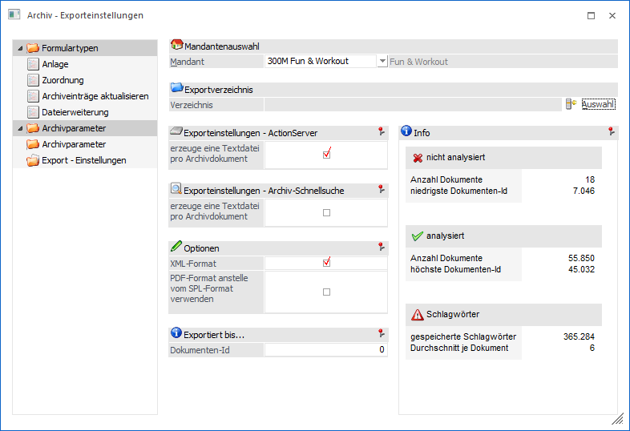
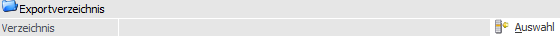
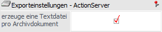
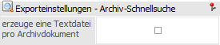
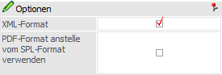
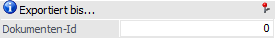
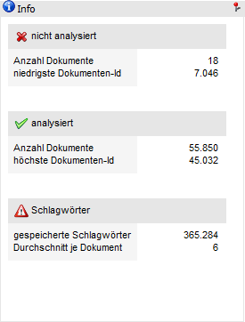
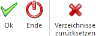

Über den Menüpunkt…
1 WinLine ADMIN
1 Archiv
1 Archivverwaltung
1 Exporteinstellungen
… können die Basiseinstellungen für den Export von Archivdokumenten vorgenommen werden, wobei die Hinterlegung immer pro Mandant erfolgt.
Hinweis
Der Export der Archivdokumente selbst kann entweder in der Archiv Schnellsuche (Button "schneller Export") oder via "Action Server" durchgeführt werden.

Mandantenauswahl

Ø Mandant
Aus der Auswahlliste kann der Mandant ausgewählt werden, für welchen die Parameter vergeben werden sollen. Nach Bestätigung des Mandanten, wird der Mandantenname angezeigt und die weiteren Felder zur Bearbeitung freigegeben.
Exportverzeichnis

Ø Verzeichnis
Durch Anklicken des Buttons "Auswahl" kann ein Verzeichnis ausgewählt werden, in das der Export der Archivdateien durchgeführt werden soll. Dabei stehen alle Verzeichnisse zur Verfügung, auf die der PC bzw. der Benutzer zugreifen kann. Als Ergebnis kann sowohl ein absolutes Verzeichnis (F:\ARCHIV\) als auch ein UNC - Verzeichnis (\\SERVER\ARCHIV\) verwendet werden. Wird kein Verzeichnis ausgewählt, so wird beim Export das Programmverzeichnis vorgeschlagen.
Exporteinstellungen - ActionServer

Ø erzeuge eine Textdatei pro Archivdokument
Mit Hilfe dieser Option wird bei einem Export via ActionServer pro Archivdokument eine Textdatei erzeugt, welche die Beschlagwortung des jeweiligen Dokuments enthält.
Hinweis
Mit Hilfe von solchen Beschlagwortungsdateien kann bei einem Import des Archivdokuments (z.B. in eine andere WinLine-Installation) die Beschlagwortung automatisch erzeugt werden.
Exporteinstellungen - Archiv-Schnellsuche

Ø erzeuge eine Textdatei pro Archivdokument
Mit Hilfe dieser Option wird bei einem Export via Archiv Schnellsuche pro Archivdokument eine Textdatei erzeugt, welche die Beschlagwortung des jeweiligen Dokuments enthält.
Hinweis
Mit Hilfe von solchen Beschlagwortungsdateien kann bei einem Import des Archivdokuments (z.B. in eine andere WinLine-Installation) die Beschlagwortung automatisch erzeugt werden.
Optionen

Ø XML-Format
Diese Option kann nur aktiviert werden, wenn eine der "erzeuge eine Textdatei pro Archivdokument"-Optionen aktiviert wurde. Hierdurch wird dann anstelle der Textdatei eine XML-Datei mit der jeweiligen Beschlagwortung pro Archivdokument erstellt.
Hinweis
In der XML-Datei wird bei geklammerten Dokumenten jene Dokumenten-Id mitgegeben, mit dem dieses Dokument zusammen "geklammert" ist.
Beispiel
Gescanntes Dokument mit der Dokumenten-Id 47. An dieses Dokument ist das Dokumente mit der Dokumenten-Id 48 geklammert. Wird nun das Dokument mit der Id 47 exportiert, so wird auch automatisch das Dokument mit der ID 48 exportiert.
In der XML-Datei vom Dokument 48 ist vermerkt, dass dieses Dokument zum Dokument 47 dazu gehört (Eintrag im XML:<ParentId>47</ParentId>)
Ø PDF-Format anstelle von SPL-Format verwenden
Wenn diese Checkbox aktiviert ist, dann werden Archivdokumente, die als SPL-Dateien gespeichert wurden (Ausdrucke aus der WinLine), als PDF-Dateien exportiert.
Exportiert bis…

Ø Dokumenten-Id
In diesem Feld steht die zuletzt exportierte Dokumenten-Id, welche automatisch vom Action Server genutzt und gepflegt wird. D.h. ab dieser Nummer exportiert der Action Server alle "neuen" Einträge und führt nach Abschluss des Exports ein Update der Nummer durch. Ein manuelles Anpassen der Dokumenten-Id ist ohne weiteres möglich.
Info

Auf der rechten Seite werden noch einige Informationen zum Archiv angezeigt:
nicht analysiert
Ø Anzahl Dokumente
Hier wird die Anzahl der Dokumente angezeigt, die zwar ins Archiv gestellt, aber noch nicht analysiert wurden.
Ø niedrigste Dokumenten-Id
Hier wird die niedrigste Dokumenten-ID der nicht analysierten Archivdokumente angezeigt.
analysiert
Ø Anzahl Dokumente
Hier wird die Anzahl der bereits analysierten Dokumente, die sich im Archiv befinden, angezeigt.
Ø höchste Dokumenten-Id
Hier wird die höchste Dokumenten-ID der analysierten Archivdokumente angezeigt.
Schlagwörter
Ø gespeicherte Schlagwörter
Hier wird die Summe der gespeicherten Schlagwörter angezeigt.
Ø Durchschnitt je Dokument
Der Durchschnitt ergibt sich aus Anzahl der gespeicherten Schlagwörter durch Anzahl der analysierten Dokumente.
Buttons

Ø Ok
Durch Drücken des Buttons "Ok" bzw. der Taste F5 werden die vorgenommenen Einstellungen gespeichert und der nächste Mandant kann bearbeitet werden.
Ø Ende
Durch Drücken des Buttons "Ende" bzw. der Taste ESC wird das Fenster geschlossen und vorgenommene Änderungen werden nicht gespeichert.
Ø Verzeichnisse zurücksetzen
Durch Anwahl dieses Buttons wird das Verzeichnis aus dem Bereich "Exportverzeichnis" initialisiert.